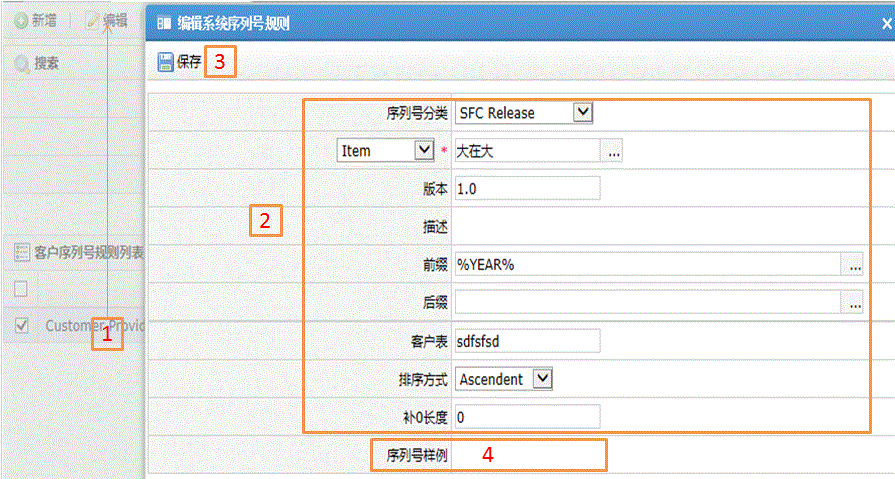

| 字段名 | 描述 |
| 序列号分类 | SFC Release:当工单释放时，产生唯一的序号对应的规则； SFC Serialize：序列化序号时，产生唯一的号码对应的规则； Shop Order：产生唯一的工单号码对应的规则； Process Lot：产生唯一批号时对应的规则； RMA Number：产生唯一返工单号对应的规则； Container Number：产生唯一容器号码对应的规则； Incident Number：系统保留； Slot Configuration：系统保留； Inventory Receipt：产生唯一的收货号码对应的规则； Customer Order：产生客户的订单号码对应的规则； Component Hold：系统保留； ECO Number：产生工程变更号码对应的规则。 |
| 应用类型 | Item：用于产品； Item Group：用于产品组； Container：用于容器（卡通，卡板等） |
| 版本 | 当应用类型选择产品后对应产品的版本 |
| 描述 | 选择产品后对该产品的描述，系统自动带出 |
| 前缀 | 该规则的前缀 |
| 后缀 | 该规则的后缀 |
| 客户表 | 存储在数据库中的客户表，用来存放序列号数据 |
| 排序方式 | Ascendent：升序； Descendent：降序 |
| 补0长度 | 需要添加0到序列号中的长度 |
| 序列号样式 | 当保存规则后显示规则将会产生的序列号样式，用以确认规则是否设置正确 |
| 序号最小值 | 指定规则中产生序号的最小值 |
| 递增值 | 规则中每次增加的值 |
| 当前序号 | 规则中当前的序号值 |
| 提前警告 | 设定数值，标示当达到最大值和提前警告值之间差值时的系统提醒 |
| 复位方式 | Never:不需要复位； Daily:每天复位； Weekly:每周复位； Monthly:每月复位； Yearly:每年复位。 |
| 序列号样式 | 当保存规则后显示规则将会产生的序列号样式，用以确认规则是否设置正确 |
